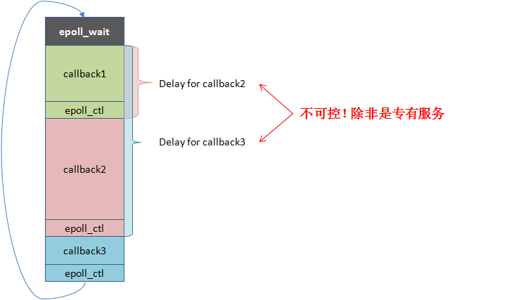
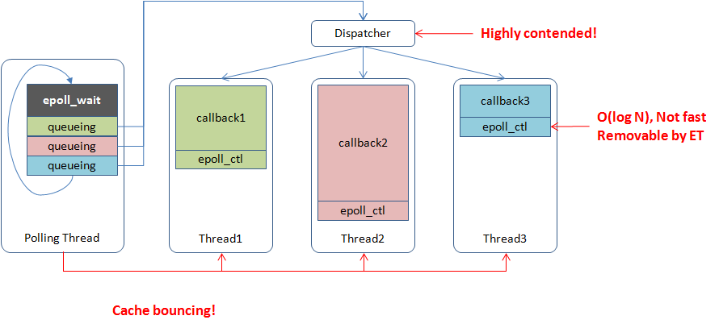

线程模型是服务端编程的根基。在进入 brpc 的线程设计之前，先梳理几类常见的服务端线程模型：thread-per-connection、单线程 reactor（event-loop）、N:1 线程库、多线程 reactor 与 M:N 线程库，看看它们各自如何运行，又各有什么问题——这也是理解 brpc 线程与协程设计的背景。
thread-per-connection：一个连接一个线程
在这个模型中，线程/进程处理来自绑定连接的消息，在连接断开前不退也不做其他事情。当连接数逐渐增多时，线程/进程占用的资源和上下文切换成本会越来越大，性能很差，这就是 C10K 问题的来源。这种方法常见于早期的 web server，现在很少使用。
单线程 reactor（event-loop）
以 libevent、libev 等 event-loop 库为典型。这个模型一般由一个 event dispatcher 等待各类事件，待事件发生后原地调用对应的 event handler，全部调用完后等待更多事件，故为「loop」。这个模型的实质是把多段逻辑按事件触发顺序交织在一个系统线程中。
一个 event-loop 只能使用一个核，故此类程序要么是 IO-bound，要么是每个 handler 有确定的较短的运行时间（比如 http server），否则一个耗时漫长的回调就会卡住整个程序，产生高延时。在实践中这类程序不适合多开发者参与，一个人写了阻塞代码可能就会拖慢其他代码的响应。由于 event handler 不会同时运行，不太会产生复杂的 race condition，一些代码不需要锁。此类程序主要靠部署更多进程增加扩展性。
单线程 reactor 的运行方式及问题如下图所示：

N:1 线程库（协程）
N:1 线程库又称为 Fiber，以 GNU Pth、StateThreads 等为典型，一般是把 N 个用户线程映射入一个系统线程，同时只运行一个用户线程，调用阻塞函数时才会切换至其他用户线程。
N:1 线程库与单线程 reactor 在能力上等价，但事件回调被替换为了上下文（栈、寄存器、signals），运行回调变成了跳转至上下文。和 event-loop 库一样，单个 N:1 线程库无法充分发挥多核性能，只适合一些特定的程序。只有一个系统线程对 CPU cache 较为友好，加上舍弃对 signal mask 的支持的话，用户线程间的上下文切换可以很快（100~200ns）。N:1 线程库的性能一般和 event-loop 库差不多，扩展性也主要靠多进程。
多线程 reactor
以 boost::asio 为典型。一般由一个或多个线程分别运行 event dispatcher，待事件发生后把 event handler 交给一个 worker 线程执行。这个模型是单线程 reactor 的自然扩展，可以利用多核。
由于共用地址空间使得线程间交互变得廉价，worker thread 间一般会更及时地均衡负载，而多进程一般依赖更前端的服务来分割流量，一个设计良好的多线程 reactor 程序往往能比同一台机器上的多个单线程 reactor 进程更均匀地使用不同核心。
不过由于 cache 一致性的限制，多线程 reactor 并不能获得线性于核心数的性能，在特定的场景中，粗糙的多线程 reactor 实现跑在 24 核上甚至没有精致的单线程 reactor 实现跑在 1 个核上快。由于多线程 reactor 包含多个 worker 线程，单个 event handler 阻塞未必会延缓其他 handler，所以 event handler 未必得非阻塞，除非所有的 worker 线程都被阻塞才会影响到整体进展。事实上，大部分 RPC 框架都使用了这个模型，且回调中常有阻塞部分，比如同步等待访问下游的 RPC 返回。
多线程 reactor 的运行方式及问题如下：

M:N 线程库
M:N 线程库即把 M 个用户线程映射入 N 个系统线程。M:N 线程库可以决定一段代码何时开始在哪运行，并何时结束，相比多线程 reactor 在调度上具备更多的灵活度。但实现全功能的 M:N 线程库是困难的，它一直是个活跃的研究话题。
我们这里说的 M:N 线程库特别针对编写网络服务，在这一前提下一些需求可以简化，比如没有时间片抢占，没有（完备的）优先级等。M:N 线程库可以在用户态也可以在内核中实现：用户态的实现以新语言为主，比如 GHC threads 和 goroutine，这些语言可以围绕线程库设计全新的关键字并拦截所有相关的 API；而在现有语言中的实现往往得修改内核，比如 Windows UMS 和 Google SwitchTo（虽然是 1:1，但基于它可以实现 M:N 的效果）。相比 N:1 线程库，M:N 线程库在使用上更类似于系统线程，需要用锁或消息传递保证代码的线程安全。
现有实现的共性问题
理论上代码都写成事件驱动型能最大化 reactor 模型的能力，但实际由于编码难度和可维护性，用户的使用方式大都是混合的：回调中往往会发起同步操作，阻塞住 worker 线程使其无法处理其他请求。一个请求往往要经过几十个服务，线程把大量时间花在了等待下游请求上，用户得开几百个线程以维持足够的吞吐，这造成了高强度的调度开销，并降低了 TLS 相关代码的效率。
任务的分发大都是使用全局 mutex + condition 保护的队列，当所有线程都在争抢时，效率显然好不到哪去。更好的办法也许是使用更多的任务队列，并调整调度算法以减少全局竞争：比如每个系统线程有独立的 runqueue，由一个或多个 scheduler 把用户线程分发到不同的 runqueue，每个系统线程优先运行自己 runqueue 中的用户线程，然后再考虑其他线程的 runqueue。这当然更复杂，但比全局 mutex + condition 有更好的扩展性，这种结构也更容易支持 NUMA。
当 event dispatcher 把任务递给 worker 线程时，用户逻辑很可能从一个核心跳到另一个核心，并等待相应的 cacheline 同步过来，并不很快。如果 worker 的逻辑能直接运行于 event dispatcher 所在的核心上就好了，因为大部分时候尽快运行 worker 的优先级高于获取新事件。类似的是收到 response 后最好在当前核心唤醒正在同步等待 RPC 的线程。
异步编程中的流程控制对于专家也充满了陷阱。任何挂起操作，如 sleep 一会儿或等待某事完成，都意味着用户需要显式地保存状态，并在回调函数中恢复状态，异步代码往往得写成状态机的形式。当挂起较少时，这有点麻烦，但还是可把握的。问题在于一旦挂起发生在条件判断、循环、子函数中，写出这样的状态机并能被很多人理解和维护，几乎是不可能的，而这在分布式系统中又很常见，因为一个节点往往要与多个节点同时交互。另外如果唤醒可由多种事件触发（比如 fd 有数据或超时了），挂起和恢复的过程容易出现 race condition，对多线程编码能力要求很高。语法糖（比如 lambda）可以让编码不那么「麻烦」，但无法降低难度。
共享指针在异步编程中很普遍，这看似方便，但也使内存的 ownership 变得难以捉摸：如果内存泄漏了，很难定位哪里没有释放；如果 segment fault 了，也不知道哪里多释放了一下。大量使用引用计数的用户代码很难控制代码质量，容易长期在内存问题上耗费时间。如果引用计数还需要手动维护，保持质量就更难了，维护者也不会愿意改进。没有上下文会使得 RAII 无法充分发挥作用，有时需要在 callback 之外 lock、callback 之内 unlock，实践中很容易出错。